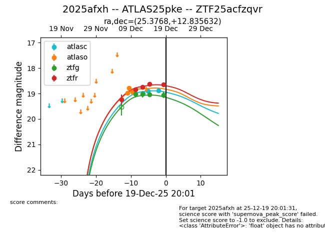
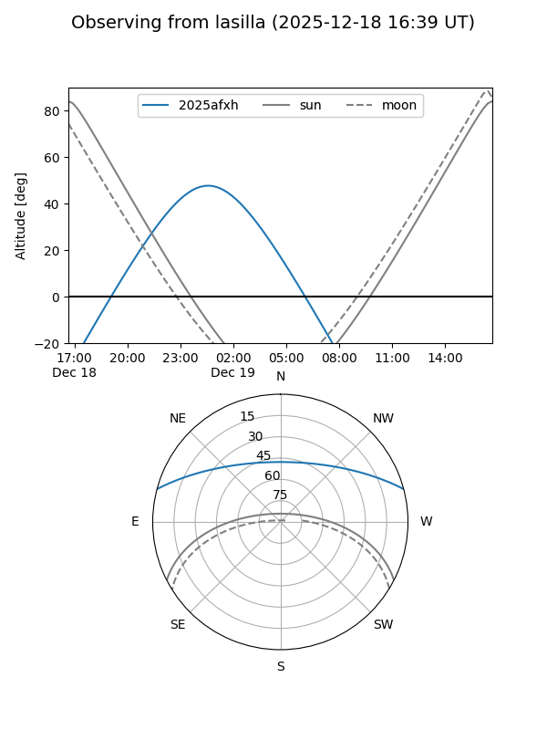
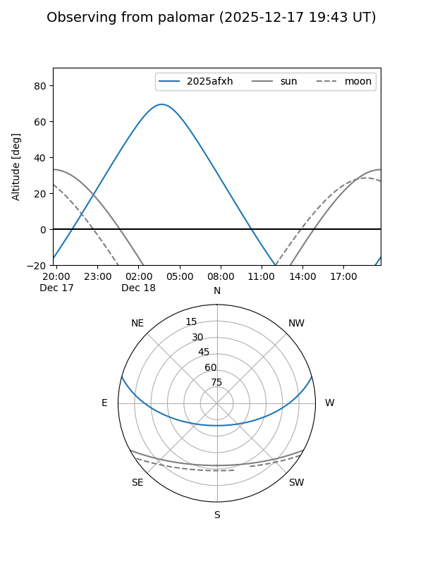
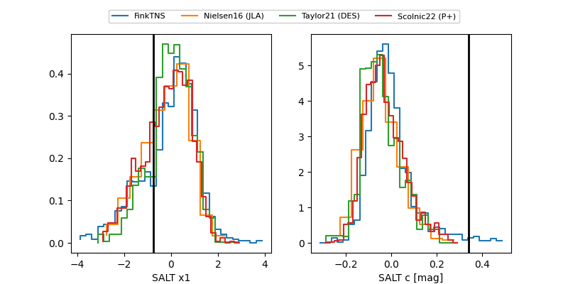

2025afxh
Target 2025afxh at 2025-12-19 06:34
Aliases and brokers:
FINK: fink-portal.org/ZTF25acfzqvr
Lasair: lasair-ztf.lsst.ac.uk/objects/ZTF25acfzqvr
ALeRCE: alerce.online/object/ZTF25acfzqvr
TNS: wis-tns.org/object/2025afxh
YSE: ziggy.ucolick.org/yse/transient_detail/2025afxh
alt names
ZTF25acfzqvr (ztf,fink_ztf)
2025afxh (tns,yse)
Coordinates:
equatorial (ra, dec) = 25.3768,+12.83563
equatorial (HMS+DMS) = 01:41:30.42,+12:50:08.28
galactic (l, b) = (141.4272,-48.22990)
Flags:
Photometry:
last atlasc=18.99, atlaso=18.95, ztfg=19.05, ztfr=18.66
1 atlasc, 3 atlaso, 4 ztfg, 5 ztfr detections
Lightcurve

Visibility


Additional plots
